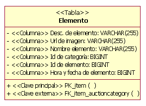

| Directriz: Modelo de datos |
 |
|
| Elementos relacionados |
|---|
Visión generalLos Modelos de datos se utilizan para diseñar la estructura de los almacenes de datos persistentes que se utilizan en el sistema. El perfil de Lenguaje unificado de modelado (UML) para el diseño de bases de datos proporciona a los diseñadores de bases de datos un conjunto de elementos de modelado que se pueden utilizar para desarrollar el diseño detallado de las tablas en la base de datos y modelar el diseño del almacenamiento físico de la base de datos. El perfil de base de datos UML también proporciona construcciones para la integridad referencial de modelado (restricciones y desencadenantes), y también procedimientos almacenados que se utilizan para gestionar el acceso a la base de datos. Los modelos de datos se pueden construir en el nivel de empresa, de departamento o en la aplicación individual. Los modelos de datos de nivel de empresa y de departamento se pueden utilizar para proporcionar definiciones estándar para entidades empresariales clave (como cliente y empleado) que se utilizarán en todas las aplicaciones de una empresa o de una unidad de negocio. Estos tipos de modelos de datos también pueden utilizarse para definir qué sistemas de la empresa son "propietarios" de los datos de una entidad empresarial específica y qué otros sistemas son usuarios de (suscritos a) los datos. En esta directriz se describen los elementos de modelo del perfil UML para el modelado de base de datos que se utiliza para construir un modelo de datos para una base de datos relacional. Como existen numerosas publicaciones sobre la teoría general de las bases de datos, no cubre esta área. Para obtener información de fondo sobre modelos de datos relacionales y modelos de objeto, consulte el apartado Concepto: Bases de datos relacionales y orientación de objeto Nota: las representaciones de modelado de datos contenidas en esta directriz se basan en el UML 1.3. En el momento en que se ha desarrollado esta directriz, el perfil de modelado de datos UML 1.4 no estaba disponible. Estadios del modelado de datosTal como se describe en [NBG01], existen tres estadios generales en el desarrollo de un modelo de datos: conceptual, lógico y físico. Estos estadios del modelado de datos reflejan los diferentes niveles de detalle en el diseño del almacenamiento de datos persistentes y los mecanismos de recuperación de la aplicación. Se facilita una discusión del modelado de datos conceptuales en ConceptosModelado de datos conceptuales. Los resúmenes del modelado de datos lógicos y físicos se proporcionan en las dos secciones siguientes de esta directriz. Modelado de datos lógicosEn el modelado de datos lógicos, el Diseñador de base de datos identifica las entidades clave y las relaciones que capturan la información crítica que la aplicación necesita persistir en la base de datos. Durante las tareas de análisis de caso de uso , diseño de caso de uso y diseño de clase, el diseñador de base de datos y el diseñador deben trabajar juntos para garantizar que los diseños en desarrollo del análisis y las clases de diseño de la aplicación soportarán de forma adecuada el desarrollo de la base de datos. Durante la tarea de Diseño de clase, el diseñador de base de datos y el diseñador deben identificar el conjunto de clases del modelo de diseño que deberán persistir en la base de datos. Este conjunto de clases persistentes en el modelo de diseño proporcionan una vista del modelo de diseño que, si bien es diferente del modelo de diseño lógico tradicional, cumple muchas de las mismas necesidades. Las clases persistentes que se utilizan en la función de modelo de diseño del mismo modo que las entidades tradicionales en el modelo de diseño lógico. Estas clases de diseño reflejan de forma precisa los datos que deben persistir, incluyendo todas las columnas de datos (atributos) que deben persistir y las relaciones clave. Esto convierte a las clases de diseño en excelentes puntos de partida para el diseño de bases de datos físicas. Crear un modelo lógico de datos separado es una opción. Sin embargo, en el mejor de los casos, acabara capturando la misma información de forma diferente. En el peor de los casos, no lo hará, y al final no cumplirá las necesidades empresariales de la aplicación. Concretamente, si la base de datos está destinada a proporcionar servicio a una única aplicación, la vista de la aplicación de los datos será el mejor punto de partida. El diseñador de base de datos crea tablas a partir de este conjunto de clases de diseño persistentes para formar un modelo físico de datos inicial. Igualmente, se pueden producir situaciones que requerirán que el diseñador de base de datos cree un diseño idealizado de la base de datos que es independiente del diseño de la aplicación. En este caso, el diseño lógico de la base de datos está representado en un modelo lógico de datos separado que forma parte del Producto de trabajo: Modelo de datos global. Este modelo lógico de datos ilustra las entidades lógicas clave y sus relaciones que son necesarias para satisfacer los requisitos del sistema para datos persistentes que sean coherentes con la arquitectura global de la aplicación. El modelo lógico de datos se puede construir mediante los elementos de modelado del perfil UML para el diseño de base de datos descrito en las secciones siguientes de esta directriz. Para proyectos que utilicen este enfoque, la estrecha colaboración entre los diseñadores de aplicación y los diseñadores de base de datos es absolutamente esencial para el desarrollo correcto del diseño de la base de datos. El modelo lógico de datos se puede perfeccionar aplicando las reglas estándar de normalización como se definen en Concepto: Normalización antes de desarrollar los elementos del modelo lógico de datos para crear el diseño físico de la base de datos. La figura siguiente ilustra el enfoque principal del uso de las clases de modelo de diseño como el origen del diseño de base de datos lógica para crear un modelo físico de datos. También ilustra el enfoque alternativo de la utilización de un modelo lógico de datos separado.
Enfoques del modelado de datos lógicos Modelado de datos físicosEl modelado de datos físicos es el estadio final del desarrollo del diseño de la base de datos. El modelo físico de datos consta de los diseños de tabla de base de datos detallada y sus relaciones creadas inicialmente desde las clases de diseño persistente y sus relaciones. La mecánica de realizar la transformación de las clases de modelo de diseño en tablas se discute en Directriz: Aplicación de ingeniería directa en bases de datos relacionales. El modelo físico de datos forma parte del modelo de datos; no es un artefacto separado. Las tablas del modelo físico de datos tiene columnas bien definidas, así como claves e índices según sea necesario. Las tablas también pueden tener desencadenantes definidos como necesarios para proporcionar soporte a la funcionalidad de la base de datos y la integridad referencial del sistema. Además de las tablas, se han creado, documentado y asociado procedimientos almacenados con la base de datos donde residirá el procedimiento almacenado. En el diagrama siguiente se muestra un ejemplo de algunos de los elementos del modelo físico de datos. Este modelo de ejemplo es una parte del modelo físico de datos de una aplicación de subasta en línea de ficción. Muestra cuatro tablas (Subasta, Ofertas, Elemento y Categoría de subasta), junto con un procedimiento almacenado (sp_Auction) y la clase de contenedor (AuctionManagement). La figura también muestra las columnas de cada tabla, las restricciones de clave principal y clave externa, y los índices definidos para las tablas.
Ejemplo (físico) de elementos del modelo de datos El modelo físico de datos también contiene correlaciones de las tablas a unidades de almacenamiento (espacios de tabla) en la base de datos. La figura siguiente muestra un ejemplo de esta correlación. en este ejemplo, las tablas Subasta y Estado de pedido se correlacionan con un espacio de tablas denominado PRIMARY. El diagrama también ilustra el modelado de la realización de las tablas a la base de datos (denominado PearlCircle en este ejemplo).
Ejemplo de elementos del modelo de almacenamiento de datos En los proyectos en que ya existe una base de datos, el diseñador de base de datos puede revertir la ingeniería de la base de datos existente para rellenar el modelo físico de datos. Consulte el apartado Directriz: Revertir la ingeniería de bases de datos relacionales para obtener más información. Elementos de modelo de datosEn esta sección se describen las directrices generales del modelado para cada elemento principal del modelo de datos basado en el perfil UML para el modelado de bases de datos. Una breve descripción de cada elemento de modelo va seguida de una ilustración de ejemplo del elemento de modelo UML. La sección Relaciones de esta directriz incluye una descripción del uso de los elementos de modelo. PaqueteLos paquetes UML estándar se utilizan para agrupar y organizar elementos del modelo de datos. Por ejemplo, los paquetes se pueden definir para organizar el modelo de datos en modelos de datos lógicos y físicos separados. Los paquetes también se pueden utilizar para identificar los grupos de tablas lógicamente relacionados en el modelo de datos que constituyen las "áreas temáticas" de datos principales de importancia para el dominio empresarial de la aplicación que se está desarrollando. La figura siguiente muestra un ejemplo de dos paquetes de área temática (Gestión de subastas y Gestión de cuentas de usuario) que se utilizan para organizar vistas y tablas en el modelo de datos.
Ejemplo de paquetes de área temática TablaEn el perfil UML para el modelado de base de datos, una tabla se modela como una clase con un estereotipo de <<Tabla>>. Las columnas de la tabla se modelan como atributos con el estereotipo de <<columna>>. Una o más columnas se pueden designar como clave principal para proporcionar entradas de fila únicas en la tabla. Las columnas también se pueden designar como claves externas. Las claves principales y las claves externas tienen restricciones asociadas que se modelan como operaciones estereotipadas de <<clave principal>> y <<clave externa>> respectivamente. La figura siguiente ilustra la estructura de un ejemplo de tabla que se utiliza para gestionar información sobre elementos que se venden por subasta en un sistema de subasta en línea de ficción.  Ejemplo de tabla Las tablas se pueden relacionar con otras tablas a través de los tipos de relaciones siguientes:
La sección Relaciones de esta directriz proporciona ejemplos de cómo se utilizan estas relaciones. La información sobre estos tipos de relaciones se puede correlacionar con los elementos de modelo de diseño y aparece en Directriz: Revertir la ingeniería de bases de datos relacionales. DesencadenanteUn desencadenante es una función de procedimiento diseñada para ejecutar como resultado de alguna acción de la tabla donde reside el desencadenante. Un desencadenante se define para ejecutar cuando se inserta una fila en la tabla, se actualiza o se suprime. Adicionalmente, el desencadenante se designa para ejecutar antes o después de que se ejecute el mandato de tabla. Los desencadenantes se definen como operaciones en una tabla. Las operaciones se estereotipan como <<Desencadenante>>.
Ejemplo de desencadenante ÍndiceLos índices se utilizan como mecanismos para habilitar el acceso rápido de la información cuando se utilizan columnas específicas para buscar la tabla. Un índice se modela como una operación en la tabla con un estereotipo de <<índice>>. Los índices pueden estar designados como exclusivos y pueden designarse en clúster o sin clúster. Los índices con clúster se utilizan para forzar el orden de la fila de datos en la tabla, para que se alinee con el orden de los valores de índice. Un ejemplo de una operación de índice (IX_auctioncategory) se muestra en la figura siguiente.
Ejemplo de índice VistaUna vista es una tabla virtual sin almacenamiento persistente independiente. Una vista tiene las características y los comportamientos de una tabla y accede a los datos en las columnas de las tablas con que la vista ha definido relaciones. Las vistas se utilizan para proporcionar un acceso más eficaz a la información en más o menos tablas y también se puede utilizar para forzar reglas empresariales para restringir el acceso a los datos de las tablas. En el ejemplo siguiente, AuctionView se ha definido como una "vista" de información en la tabla de Subastas en la sección de modelados de datos físicos de esta directriz. Las vistas se modelan como clases con el estereotipo de <<vista>>. Los atributos de la clase de vista son las columnas de las tablas a las que se hace referencia en la vista. Los tipos de datos de las columnas de la vista se heredan de las tablas con una dependencia definida con la vista
Ejemplo de vista DominioUn dominio es un mecanismo que se utiliza para crear tipos de datos definidos por el usuario que se pueden aplicar a columnas a través de múltiples tablas. Un dominio está modelado como clase con el estereotipo <<Dominio>>. En el ejemplo siguiente, se ha definido un dominio para el código postal "CP + 4".
Ejemplo de dominio Contenedor de procedimientos almacenadosUn contenedor de procedimiento almacenado es una agrupación de procedimientos almacenados del modelo de datos. Un contenedor de procedimiento almacenado se crea como una clase UML que se estereotipa como <<Contenedor SP>>. Múltiples contenedores de procedimientos almacenados se pueden crear en un diseño de base de datos. Cada contenedor de procedimiento almacenado debe tener como mínimo un procedimiento almacenado. Procedimiento almacenadoUn procedimiento almacenado es un procedimiento independiente que habitualmente reside en el servidor de base de datos. Los procedimientos almacenados se documentan como operaciones que se agrupan en clases estereotipadas como <<Contenedor SP>>. Las operaciones se estereotipan como <<SP>>. En el ejemplo siguiente se muestra una única operación de procedimiento almacenado (SP_Auction) en una clase de contenedor denominada AuctionManagement. Cuando se diseñan procedimientos almacenados, el diseñador de base de datos debe estar informado de cualquier convenio de denominación utilizado por el RDBMS específico.
Ejemplo de contenedor de procedimientos almacenados y procedimiento almacenado Espacio de tablasUn espacio de tablas representa la cantidad de espacio de almacenamiento que se debe asignar a elementos como tablas, procedimientos almacenados e índices. Los espacios de tabla están enlazados con una base de datos específica a través de una relación de dependencia. El número de espacios de tabla y cómo se correlacionarán con las tablas depende de la complejidad del modelo de datos. Las tablas a las que se accederá con frecuencia deberán partirse en múltiples espacios de tabla. Las tablas que no contienen grandes cantidades de datos a los que se accede con frecuencia se agruparán en un único espacio de tablas. Un contenedor de espacio de tablas se define para cada espacio de tablas. El contenedor de espacio de tablas es el dispositivo de almacenamiento físico para el espacio de tablas. Aunque pueden existir múltiples contenedores de espacio de tablas para un único espacio de tablas, se recomienda que un contenedor de espacio de tablas se asigne sólo a un único espacio de tablas. Los contenedores de espacio de tablas se definen como atributos para el espacio de tablas, no se modelan explícitamente.
Ejemplo de espacio de tablas
Esquema
|
© Copyright IBM Corp. 1987, 2006. Reservados todos los derechos. |